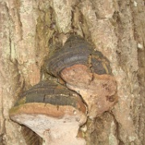

Агарикомицеты (Agaricomycetes)
Агариковые (Agaricales)
Агариковые, Шампиньоновые (Agaricaceae)
Белошампиньон сереющий, дымчатый (Leucoagaricus cinerascens)
Головач гигантский (Calvatia gigantea)
Головач мешковатый (Calvatia utriformis)
Гриб-зонтик белый, полевой (Macrolepiota excoriata)
Гриб-зонтик изящный, тонкий (Macrolepiota gracilenta)
Гриб-зонтик пёстрый, высокий, большой (Macrolepiota procera)
Гриб-зонтик сосцевидный (Macrolepiota mastoidea)
Дождевик желтоокрашенный (Lycoperdon flavotinctum)
Дождевик луговой (Lycoperdon pratense)
Дождевик маленький (Lycoperdon pusillum)
Дождевик шиповатый (Lycoperdon perlatum)
Лепиота шероховатая (Lepiota aspera)
Лепиота шерстистообутая (Lepiota clypeolaria)
Навозник белый (Coprinus comatus)
Цистодерма амиантовая (Cystoderma amianthinum)
Шампиньон кривой, отчётливоклубеньковый (Agaricus abruptibulbus)
Шампиньон обыкновенный (Agaricus campestris)
Шампиньон полевой (Agaricus arvensis)
Аманитовые (Amanitaceae)
Мухомор весенний (Amanita verna)
Мухомор вонючий, белая поганка (Amanita virosa)
Мухомор высокий (Amanita excelsa)
Мухомор королевский (Мухомор королевский)
Мухомор красный (Amanita muscaria)
Мухомор пантерный (Amanita pantherina)
Мухомор поганковидный (Amanita citrina)
Мухомор порфировый (Amanita porphyria)
Мухомор серо-розовый (Amanita rubescens)
Мухомор ярко-жёлтый (Amanita gemmata)
Поплавок жёлто-коричневый (Amanita fulva)
Поплавок шафрановый (Amanita crocea)
Вёшенковые (Pleurotaceae)
Вёшенка обыкновенная (Pleurotus ostreatus)
Вёшенка рожковидная (Pleurotus cornucopiae)
Гигрофоровые (Hygrophoraceae)
Гигрофор благоуханный (Hygrophorus agathosmus)
Гигроцибе жёлто-зелёная (Hygrocybe chlorophana)
Гигроцибе коническая (Hygrocybe conica)
Гигроцибе пёстрая (Hygrocybe psittacina)
Гнездовковые (Nidulariaceae)
Бокальчик гладкий (Crucibulum laeve)
Миценовые (Mycenaceae)
Ксеромфалина колокольчатая (Xeromphalina campanella)
Ксеромфалина стеблевидная (Xeromphalina cauticinalis)
Мицена чистая (Mycena pura)
Панеллюс поздний (Panellus serotinus)
Роридомицес росистый (Roridomyces roridus)
Негниючниковые (Marasmiaceae)
Беоспора мышехвостая (Baeospora myosura)
Негниючник тычинковый (Gymnopus androsaceus)
Паутинниковые, Кортинариевые (Cortinariaceae)
Колпак кольчатый (Rozites caperatus)
Паути́нник тёмно-бурый (Cortinarius brunneus)
Паутинник бело-фиолетовый (Cortinarius alboviolaceus)
Паутинник блистательный (Cortinarius evernius)
Паутинник браслетчатый (Cortinarius armillatus)
Паутинник голубоствольный, пачкающий, прямой (Cortinarius collinitus)
Паутинник желтый (Cortinarius triumphans)
Паутинник козлиный, вонючий (Cortinarius traganus)
Паутинник красивейший (Cortinarius rubellus)
Паутинник ленивый (Cortinarius bolaris)
Паутинник массивный (Cortinarius saginus)
Паутинник пурпурный, пурпурно-красный (Cortinarius purpureus)
Паутинник сизоножковый (Cortinarius glaucopus)
Паутинник слизистый (Cortinarius mucosus)
Паутинник шафрановый (Cortinarius croceus)
Паутиннник коричный (Cortinarius cinnamomeus)
Плютеевые (Pluteaceae)
Плютей олений (Pluteus cervinus)
Псатирелловые (Psathyrellaceae)
Навозник домашний (Coprinellus domesticus)
Навозник мерцающий (Coprinellus micaceus)
Навозник расеянный (Coprinellus disseminatus)
Навозник серый (Coprinopsis atramentaria)
Навозник смолистый (Coprinopsis picacea)
Рядовковые (Tricholomataceae)
Белопаутинник луковичный (Leucocortinarius bulbiger)
Говорушка беловатая (Clitocybe dealbata)
Говорушка ворончатая (Clitocybe gibba)
Говорушка гигантская (Leucopaxillus giganteus)
Говорушка снежная, припудренная (Clitocybe pruinosa)
Деликатула маленькая (Delicatula integrella)
Зеленушка (Tricholoma equestre)
Коллибия кудрявая, усиковая (Collybia cirrhata)
Миксомфалия гаревая (Myxomphalia maura)
Рядовка жёлто-красная (Tricholomopsis rutilans)
Рядовка землистая (Tricholoma portentosum)
Рядовка фиолетовая (Lepista nuda)
Филлотопсис гнездовидный (Phyllotopsis nidulans)
Строфариевые (Strophariaceae)
Галерина окаймлённая (Galerina marginata)
Ложноопёнок серно-жёлтый (Hypholoma fasciculare)
Ложноопёнок серопластинчатый (Hypholoma capnoides)
Опенок летний (Kuehneromyces mutabilis)
Строфария сине-зелёная (Stropharia aeruginosa)
Чешуйчатка золотисто-жёлтая (Pholiota adiposa)
Чешуйчатка камеденосная (Pholiota gummosa)
Чешуйчатка обыкновенная (Pholiota squarrosa)
Тифуловые (Typhulaceae)
Тифула инкарнатная (Typhula incarnata)
Физалакриевые (Physalacriaceae)
Новая папка
Опёнок зимний (Flammulina velutipes)
Опёнок луковичноногий (Armillaria cepistipes)
Опёнок осенний (Armillaria mellea)
Опёнок северный (Armillaria borealis)
Опёнок тёмный (Armillaria ostoyae)
Опёнок толстоногий (Armillaria lutea)
Щелелистниковые (Schizophyllaceae)
Щелелистник обыкновенный (Schizophyllum commune)
Аурикуляриевые (Auriculariales)
Аурикуляриевые (Auriculariaceae)
Аурикулярия уховидная (Auricularia auricula-judae)
Эксидия железистая (Exidia glandulosa)
Эксидия сахарная (Exidia saccharina)
Эксидия сжатая (Exidia recisa)
Эксидия чернеющая (Exidia nigricans)
Болетовые (Boletales)
Болетовые (Boletaceae)
Белый гриб (Boletus edulis)
Белый гриб берёзовый (Boletus betulicola)
Боровик пороспоровый (Xerocomus porosporus)
Дубовик оливково-бурый (Boletus luridus)
Желчный гриб (Tylopilus felleus)
Моховик зелёный (Xerocomus subtomentosus)
Моховик трещиноватый (Xerocomellus chrysenteron)
Подберёзовик болотный (Leccinum holopus)
Подберёзовик обыкновенный (Leccinum scabrum)
Подберёзовик разноцветный (Leccinum variicolor)
Подберёзовик розовеющий (Leccinum oxydabile)
Подосиновик белый (Leccinum percandidum)
Подосиновик жёлто-бурый (Leccinum versipelle)
Подосиновик красный (Leccinum aurantiacum)
Сатанинский гриб (Boletus satanas)
Говорушковые (Hygrophoropsidaceae)
Говорушка оранжевая, ложная лисичка (Hygrophoropsis aurantiaca)
Маслёнковые (Suillaceae)
Козляк, решетник (Suillus bovinus)
Маслёнок обыкновенный (Suillus luteus)
Моховик, Маслёнок жёлто-бурый (Suillus variegatus)
Мокруховые, гомфидиевые (Gomphidiaceae)
Мокруха еловая (Gomphidius glutinosus)
Мокруха розовая (Gomphidius roseus)
Ризопогоновые (Rhizopogonaceae)
Ризопогон, корневец желтоватый (Rhizopogon obtectus)
Тапинелловые (Tapinellaceae)
Свинушка толстая, войлочная (Tapinella atrotomentosa)
Весёлковые (Phallales)
Весёлковые (Phallaceae)
Решёточник красный (Clathrus ruber)
Гименохетовые (Hymenochaetales)
Гименохетовые (Hymenochaetaceae)
Сухлянка двухлетняя, тёмная (Coltricia perennis)
Трутовик ложный осиновый (Phellinus tremulae)
Трутовик скошенный (Inonotus obliquus)
Феллинус точечный (Phellinus punctatus)
Схизопоровые (Schizoporaceae)
Оксипорус тополёвый (Oxyporus populinus)
Глеофилловые (Gloeophyllales)
Глеофилловые (Gloeophyllaceae)
Трутовик, Глеофиллум заборный (Gloeophyllum sepiarium)
Гомфовые (Gomphales)
Гомфовые (Gomphaceae)
Рогатик, рамария еловый (Ramaria abietina)
Рогатик, рамария красивая (Ramaria formosa)
Клавариадельфовые (Clavariadelphaceae)
Рогатик пестиковый (Clavariadelphus pistillaris)
Звездовиковые (Geastrales)
Звездовиковые (Geastraceae)
Звездовик маленький (Geastrum minimum)
Звездовик сводчатый (Geastrum fornicatum)
Кортициевые (Corticiales)
Кортициевые (Corticialeae)
Кортициум розовый (Laeticorticium roseum)
Цитидия ивовая (Cytidia salicina)
Лисичковые (Cantharellales)
Ежовиковые (Hydnaceae)
Ежовик жёлтый (Hydnum repandum)
Систотрема сливающаяся (Sistotrema confluens)
Клавулиновые (Clavulinaceae)
Клавулина гребенчатая (Clavulina cristata)
Клавулина коралловидная (Clavulina coralloides)
Рогатик беловатый (Clavulina rugosa)
Лисичковые (Cantharellaceae)
Вороночник извилистый (Craterellus sinuosus)
Вороночник рожковидный(Craterellus cornucopioides)
Лисичка желтеющая (Cantharellus lutescens)
Лисичка обыкновенная (Cantharellus cibarius)
Лисичка трубчатая (Cantharellus tubaeformis)
Полипоровые (Polyporales)
Ганодермовые (Ganodermataceae)
Трутовик плоский (Ganoderma applanatum)
Мерулиевые (Meruliaceae)
Климакодон северный (Climacodon septentrionalis)
Мерулиус дрожащий (Merulius tremellosus)
Флебия дрожащая (Phlebia tremellosa)
Флебия радиальная (Phlebia radiata)
Полипоровые (Polyporaceae)
Дедалеопсис северный (Daedaleopsis septentrionalis)
Дедалеопсис шершавый (Daedaleopsis confragosa)
Трихаптум лиственничный (Trichaptum laricinum)
Трутовик настоящий (Fomes fomentarius)
Трутовик чешуйчатый (Polyporus squamosus)
Трутовик, Трихаптум еловый (Trichaptum abietinum)
Трутовик киноварно-красный (Pycnoporus cinnabarinus)
Трутовик, траметес жёстковолосистый (Trametes hirsuta)
Церрена одноцветная (Cerrena unicolor)
Фанерохетовые (Phanerochaetaceae)
Ирпекс молочно-белый (Irpex lacteus)
Фомитопсисовые (Fomitopsidaceae)
Трутовик берёзовый (Piptoporus betulinus)
Трутовик дубовый (Piptoporus quercinus)
Трутовик окаймлённый (Fomitopsis pinicola)
Трутовик серно-жёлтый (Laetiporus sulphureus)
Сыроежковые (Russulales)
Альбатрелловые (Albatrellaceae)
Альбатреллус краснеющий (Albatrellus subrubescens)
Альбатреллус, Трутовик овечий (Albatrellus ovinus)
Аурискальпиевые (Auriscalpiaceae)
Аурискальпиум обыкновенный (Auriscalpium vulgare)
Клавикорона крыночковидная (Clavicorona pyxidata)
Герициевые (Hericiaceae)
Ежевик коралловидный (Hericium coralloides)
Пениофоровые (Peniophoraceae)
Пениофора инкарнатная (Peniophora incarnata)
Пениофора красная (Peniophora rufa)
Стереовые (Stereaceae)
Стереум жестковолосистый (Stereum hirsutum)
Стереум нежновойлочный (Stereum subtomentosum)
Сыроежковые (Russulaceae)
Валуй (Russula foetens)
Волнушка розовая (Lactarius torminosus)
Горькушка рыжая, Горчак, Горянка (Lactarius rufus)
Груздь настоящий (Lactarius resimus)
Млечник камфорный (Lactarius camphoratus)
Млечник обыкновенный, гладыш (Lactarius trivialis)
Млечник полезный (Lactarius utilis)
Подгруздок белый, сухой груздь (Russula delica)
Подгруздок частопластинчатый (Russula densifolia)
Подгруздок чернеющий (Russula nigricans)
Рыжик еловый (Lactarius deterrimus)
Рыжик настоящий (Lactarius deliciosus)
Серушка (Lactarius flexuosus)
Сыроежка 1 (Russula sp. 1)
Сыроежка винно-красная (Russula vinosa)
Сыроежка выцветающая (Russula pulchella)
Сыроежка жгучеедкая, рвотная (Russula emetica)
Сыроежка зелёная (Russula aeruginea)
Сыроежка изящная (Russula gracillima)
Сыроежка красивая (Russula lepida)
Сыроежка красная (Russula rubra)
Сыроежка кроваво-красная (Russula sanguinaria)
Сыроежка ломкая (Russula fragilis)
Сыроежка пищевая (Russula vesca)
Сыроежка родственная (Russula consobrina)
Сыроежка розовая (Russula rosea)
Сыроежка розовоножковая (Russula rhodopus)
Сыроежка светло-жёлтая (Russula claroflava)
Сыроежка сереющая (Russula decolorans)
Сыроежка сине-жёлтая (Russula cyanoxantha)
Сыроежка цельная (Russula integra)
Чёрный груздь (Lactarius necator)
Телефоровые (Thelephorales)
Банкеровые (Bankeraceae)
Болетопсис серый (Boletopsis grisea)
Гиднеллим синеножковый (Hydnellum cyanopodium)
Гиднеллум ржавчинный (Hydnellum ferrugineum)
Гиднеллум срастающийся (Hydnellum concrescens)
Ежовик пёстрый (Sarcodon imbricatus)
Ежовик черный (Phellodon niger)
Ежовик шероховатый (Sarcodon scabrosus)
Телефоровые (Thelephoraceae)
Телефора гвоздичная (Thelephora caryophyllea)
Телефора наземная (Thelephora terrestris)
Пецицомицеты (Pezizomycetes)
Пецицевые (Pezizales)
Гельвелловые (Helvellaceae)
Лопастник бороздчатый (Helvella lacunosa)
Лопастник курчавый (Helvella crispa)
Дисциновые (Discinaceae)
Строчок гигантский (Gyromitra gigas)
Строчок обыкновенный (Gyromitra esculenta)
Строчок осенний (Gyromitra infula)
Пецицевые (Pezizaceae)
Пецица изменчивая (Peziza varia)
Пецица коричневая (Peziza badia)
Пиронемовые (Pyronemataceae)
Алеврия рейнская (Aleuria rhenana)
Гумария полушаровидная (Humaria hemisphaerica)
Скутеллиния щитовидная (Scutellinia scutellata)
Саркосцифовые (Sarcoscyphaceae)
Саркосцифа алая (Sarcoscypha coccinea)
Сморчковые (Morchellaceae)
Сморчок конический (Morchella conica)
Сордариомицеты (Sordariomycetes)
Гипокрейные (Hypocreales)
Гипокрейные (Hypocreaceae)
Гипомицес золотистоспоровый (Hypomyces chrysospermus)
Гипомицес кирпично-красный (Hypomyces lateritius)
Кордицепсовые (Cordycipitaceae)
Кордицепс военный (Cordyceps militaris)
Нектриевые (Nectriaceae)
Нектрия ярко-красная (Nectria coccinea)
Офиокордицепсовые (Ophiocordycipitaceae)
Кордицепс офиоглоссовидный (Elaphocordyceps ophioglossoides)
Ксиляриевые (Xylariales)
Диатриповые (Diatrypaceae)
Диатрипелла бородавчатая (Diatrypella verruciformis)
Ксиляриевые (Xylariaceae)
Аннулогипоксилон многообразный (Annulohypoxylon multiforme)
Бисконьезия распустившаяся (Biscogniauxia repanda)
Гипоксилон бурый (Hypoxylon fuscum)
Гипоксилон краснеющий (Hypoxylon rubiginosum)
Гипоксилон моравский (Hypoxylon moravicum)
Офиостомовые (Ophiostomatales)
Офиостомовые (Ophiostomatales)
Офиостома вязовая (Ophiostoma ulmi)
Тремелломицеты (Tremellomycetes)
Дрожалковые (Tremellales)
Дрожалковые (Tremellaceae)
Дрожалка листоватая (Tremella foliacea)
Дрожалка оранжевая (Tremella mesenterica)
Леоциомицеты (Leotiomycetes)
Гелоциевые (Helotiales)
Гелоциевые (Helotiaceae)
Аскорине мясная (Ascocoryne sarcoides)
Биспорелла лимонная (Bisporella citrina)
Гиалосцифовые (Hyaloscyphaceae)
Лахнеллюля Виллькомма (Lachnellula willkommii)
Лахнум девственный (Lachnum virgineum)
Дерматеевые (Dermateaceae)
Диплокарпон розы (Diplocarpon rosae)
Диплокарпон эрлианум (Diplocarpon earlianum)
Марссония березовая (Marssonina betulae)
Склеротиниевые (Sclerotiniaceae)
Ботритис ландышевый (Botrytis convallariae)
Ботритис серый, пепельно-серый (Botrytis cinerea)
Склеротиния склеротиновая (Sclerotinia sclerotiorum)
Цибория аментацея (Ciboria amentacea)
Цибория зелено-бурая (Ciboria viridifusca)
Леоциевые (Leotiaces)
Леоциевые (Leotiaceae)
Леоция скользкая (Leotia lubrica)
Ритисмовые (Rhytismatales)
Ритисмовые (Rhytismataceae)
Коккомицез зимний (Coccomyces hiemalis)
Ритисма брусничная (Rhytisma vaccinii)
Ритисма кленовая (Rhytisma acerinum)
Эризифовые, Настоящие Мучнисторосяные (Erysiphales)
Эризифовые, Настоящие Мучнисторосяные (Erysiphaceae)
Савадея Тюляня(Sawadaea tulasnei)
Эризифе цикориевая (Erysiphe cichoracearum)
Эрисифе ячменновидная (Erysiphe alphitoides)
Дакримицеты (Dacrymycetes)
Дакримицетовые (Dacrymycetales)
Дакримицетовые (Dacrymycetaleae)
Дакримицес золотистоспоровый (Dacrymyces chrysospermus)
Дакримицес исчезающий (Dacrymyces stillatus)
Дакримицес ладоневидный (Dacrymyces palmatus)
Калоцера роговидная (Calocera cornea)
Экзобазидиомицеты (Exobasidiomycetes)
Пукциниомицеты (Pucciniomycetes)
Ржавчинные грибы, пукциниевые (Pucciniales)
Колеоспоровые (Coleosporiaceae)
Кронатиевые (Cronartiaceae)
Мелампсоровые (Melampsoraceae)
Пукциниевые (Pucciniaceae)
Экзобазидиевые (Exobasidiales)
Экзобазидиевые (Exobasidiaceae)
Экзобазидиум брусничный (Exobasidium vaccinii)
Экзобазидиум голубичный (Exobasidium vaccinii-uliginosi)
Тафриномицеты (Taphrinomycetes)
Тафриновые (Taphrinales)
Протомициевые (Protomycetaceae)
Протомицес крупноспоровый (Protomyces macrosporus)
Тафриновые (Taphrinaceae)
Тафрина берёзовая (Taphrina betulina)
Тафрина рябиновая (Taphrina sorbi)
Дотидеомицеты (Dothideomycetes)
Дотидеевые (Dothideales)
Дотидеевые (Dothideaceae)
Стигмина плодовая (Stigmina carpophila)
Плеоспоровые (Pleosporales)
Вентуриевые (Venturiaceae)
Вентурия неравная (Venturia inaequalis)
Коеломицеты (Coelomycetes)
Мелакониевые (Melanconiales)
Мелакониевые (Melanconiaceae)
Гномония красно-устьичная (Gnomonia erythrostoma)
Леканоромицеты (Lecanoromycetes)
Леканоровые (Lecanorales)
Биаторелловые (Biatorellaceae)
Биатерелла двухформенная, биатерелловый рак (Biatorella difformis)
Зигомицеты (Zygomycetes)
Мукоровые (Mucorales)
Фикомицетовые (Phycomycetaceae)
Спинеллюс фузигер (Spinellus fusiger)
Миксомицеты (Myxomycetes)
Лициевые (Liceales)
Ретикуляриевые (Reticulariaceae)
Ликогала древесинная (Lycogala epidendrum)
Тубиферовые (Tubiferaceae)
Тубифера ржавая (Tubifera ferruginosa)
Стемонитовые (Stemonitales)
Стемонитовые (Stemonitidaceae)
Стемонитис бурый (Stemonitis fusca)
Трихиевые (Trichiida)
Трихиевые (Trichiaceae)
Арцирия закрытая (Arcyria obvelata)
Арцирия инкарнатная (Arcyria incarnata)
Гемитрихия почковидная (Hemitrichia calyculata)
Физаровые (Physarales)
Физаровые (Physaraceae)
Фулиго гнилостный (Fuligo septica)
Lariushin.ORG Fungi
Агарикомицеты (Agaricomycetes)
Гименохетовые (Hymenochaetales)
Гименохетовые (Hymenochaetaceae)
Трутовик ложный осиновый (Phellinus tremulae)
Lariushin.ORG Fungi
»
Агарикомицеты (Agaricomycetes)
»
Гименохетовые (Hymenochaetales)
»
Гименохетовые (Hymenochaetaceae)
Select
All
None
Send feedback
1
2

3
4
5
Next:
Трутовик скошенный (Inonotus obliquus)
Previous:
Сухлянка двухлетняя, тёмная (Coltricia perennis)
Species on photos were identified with help of:
Olev Abner
Jana-Maria Habicht
Sulev Järve
Urmas Ojango
Fungarium.INFO photos and identification
by
Lariushin.ORG
is licensed under a
Creative Commons Attribution-NonCommercial-ShareAlike 4.0 International License
.
Based on a work at
fungarium.info
.


/thumbs/DSC03862.JPG)
/thumbs/DSC02847.JPG)